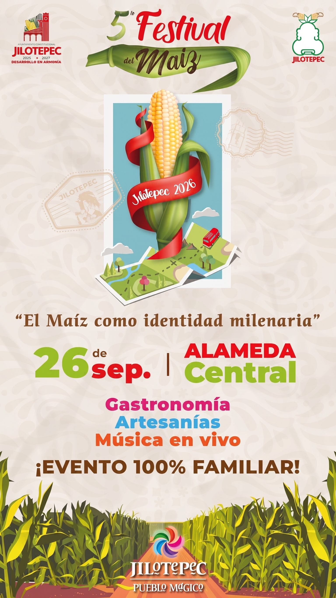

Destacado
📅 26 de Septiembre
5° Festival del Maíz
"El Maíz como identidad milenaria". Disfruta de muestra gastronómica artesanal, productos derivados de la milpa, artesanías locales y presentaciones de música en vivo en un ambiente 100% familiar.
Alameda Central